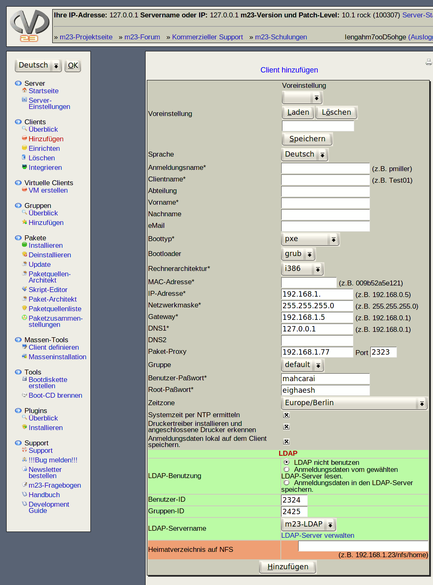

(mit * gekennzeichnete Felder müssen auf jeden Fall korrekt ausgefüllt werden)

- Voreinstellung: Sie können bereits gespeicherte Konfigurationen auswählen und anschließend laden oder löschen. Möchten Sie die aktuelle Konfiguration speichern, geben Sie einen aussagekräftigen Namen ein und klicken auf ''Speichern''.
- Sprache:Hier können Sie die Sprache für Ihren m23-Client auswählen. Diese Sprache wird für die Tastatur-, Desktop- und Konsolen-Einstellung verwendet.
- Anmeldungsname: Der Name mit dem sich der Benutzer beim Client anmeldet.
- Clientname: Ist der einmalige Name Ihres Clients, dieser sollte nicht mehrfach verwendet werden.
- Abteilung: Diese Angabe ist freiwillig, hier können Sie eintragen, wo sich der Rechner befindet (z.B. Raumnummer etc.).
- Vorname: Vorname des Benutzers, entspricht dem Loginnamen
- Nachname: Nachname des Benutzers
- eMail: eMail-Adresse des Benutzers
- Boottyp: Bootstandard für das Booten der Clients über das Netzwerk (Hinweis: Falls Sie m23 mit einem vorhanden DHCP-Server verwenden möchten, lesen Sie bitte folgende Seite: externalDHCP)
- Bootloader: Wählen Sie hier, welchen Bootloader/Bootmanager/Urlader Sie zum Starten des Linux-Kernels und evtl. anderen, bereits installierten Betriebssystemen verwenden möchten. Sie haben die Wahl zwischen LILO (LInux LOader) und GRUB (GRand Unified Bootloader).
Unterabschnitte
dodger
2014-08-06